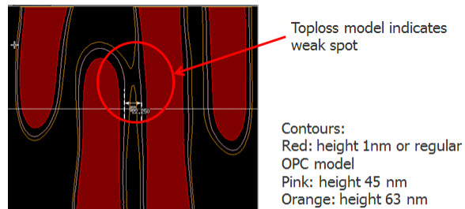

Follow these
tasks to use the 3D resist optical and CM1 model with the Calibre
nmOPC and Calibre OPCverify tools.
A difference between using a width-based optical
and height-based optical model is the way that the Calibre nmOPC
and Calibre OPCverify def_start parameter was set to adjust for height
instead of widths.
Procedure
- Create an SVRF rule file that
calls Calibre nmOPC or Calibre OPCverify.
- Create a Calibre nmOPC or
Calibre OPCverify setup file either separately or inlined inside
the SVRF rule file. Use the optical_model_load and resist_model_load
commands to load the relevant models.
- Create one or more optical
models by editing the Optical file, which can
be found in the optical model directory. Different optical model
settings have the following effect.
Higher values of def_start
are further down into the film, and indicate the CD at the chosen
height measured downwards from the top of the film.
Use the following formula for the resist plane (also referred to
as the height):
height = top_coat_thickness + resist_thickness - def_start
The resist plane is assumed
to be 0 at the bottom of the resist, where defocus start is the
largest.
Figure 1. Contours With Varying
def_start for 3D Resist Modeling
- Create one or more image command
statements that use different optical models to see the resist plane
at various levels.
- Ensure that the image commands
that you define are output as LITHO DENSEOPC or LITHO OPCVERIFY
calls in the SVRF rule file section.
- Run the rule file and examine
the results.
Results
Use the image contours in the generated
design file to see where hotspots (height-sensitive locations where
the image contour CD is less than the specified CD) appear. The
best focus value is the highest value that still captures all hotspots
while minimizing false hotspots (an etching failure).